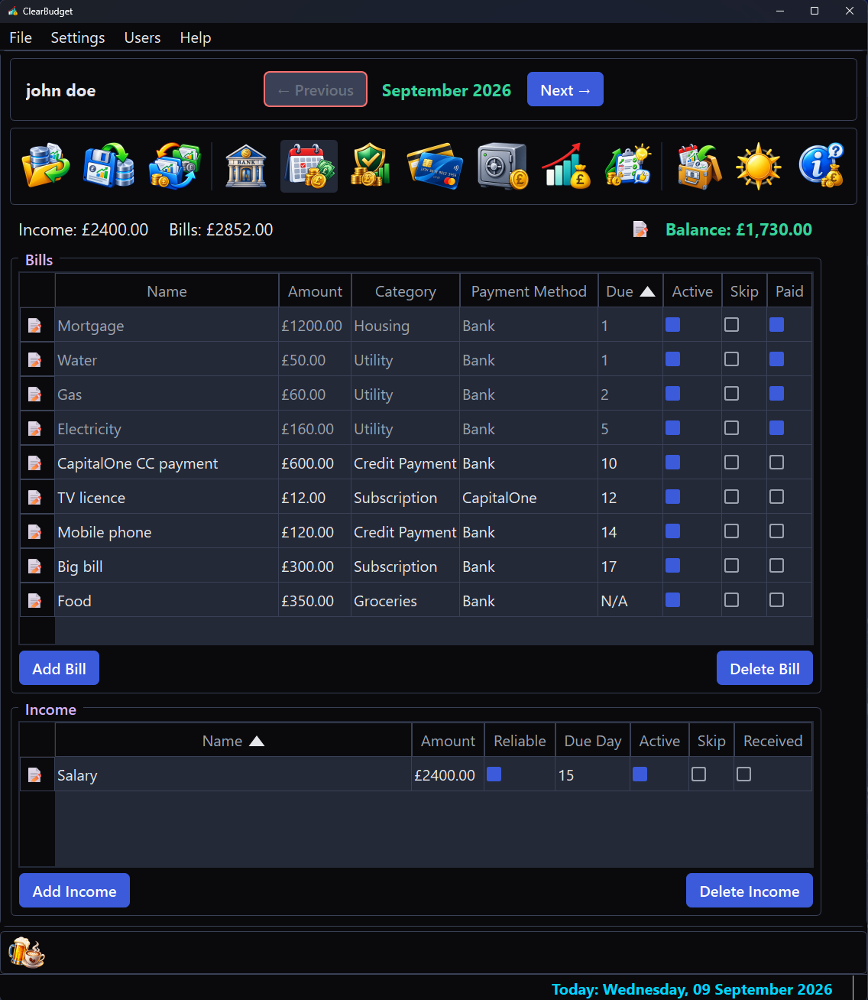
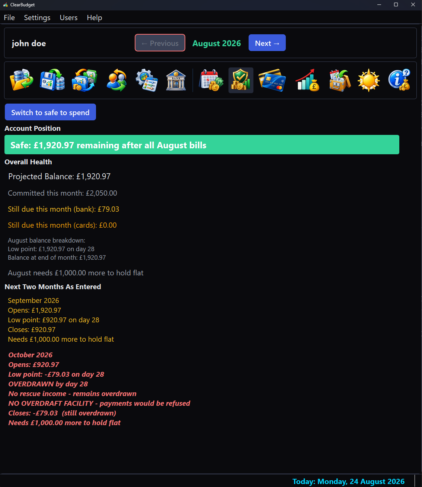
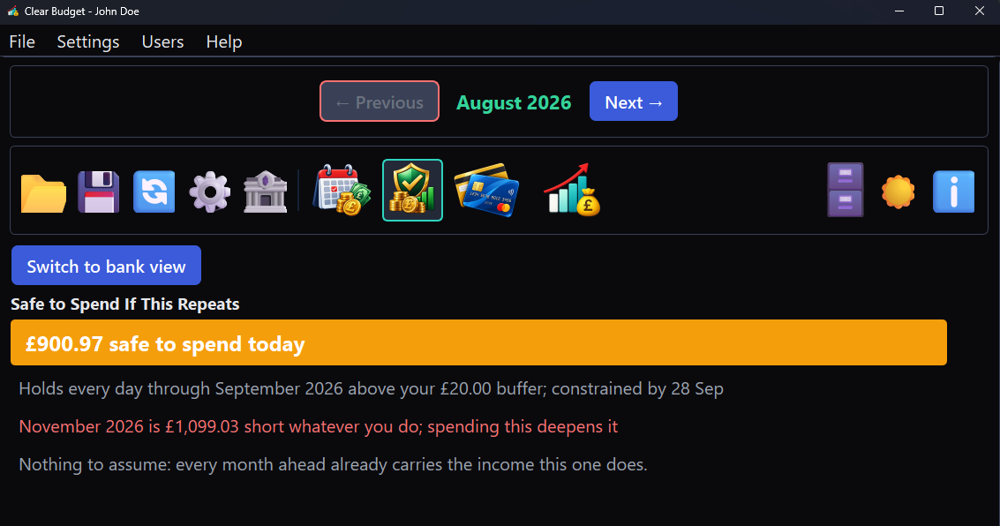
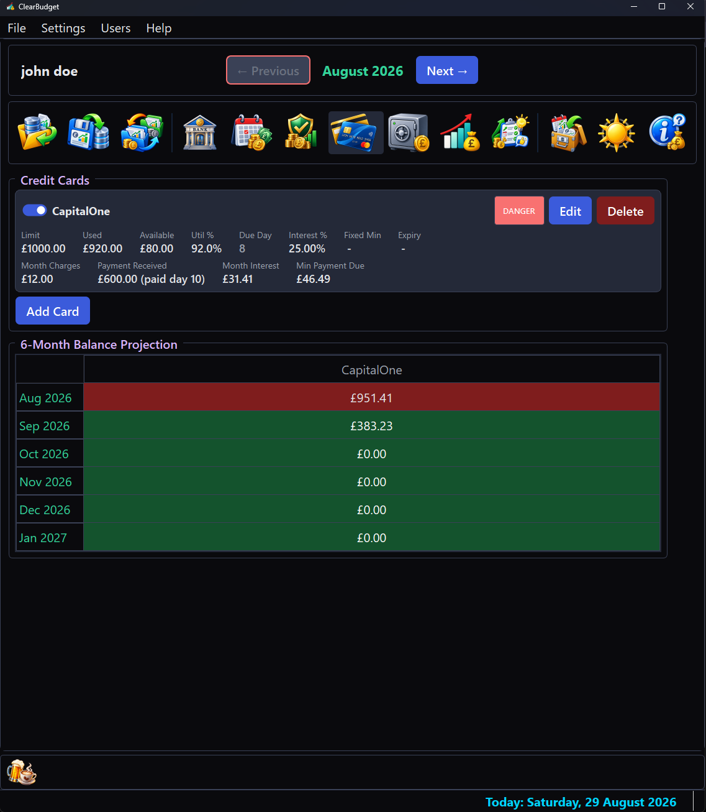
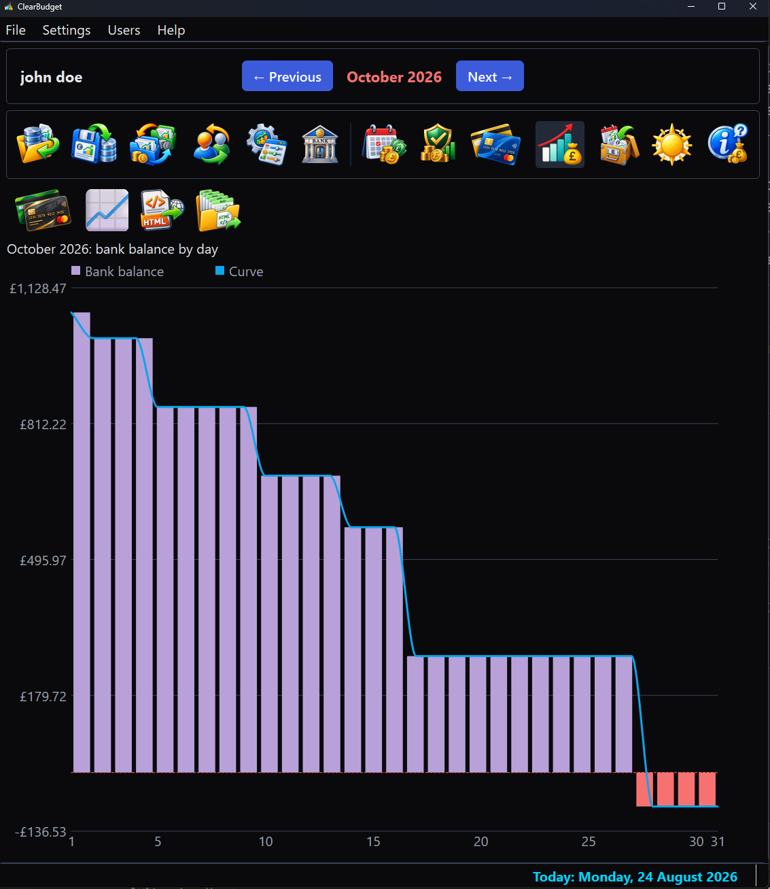
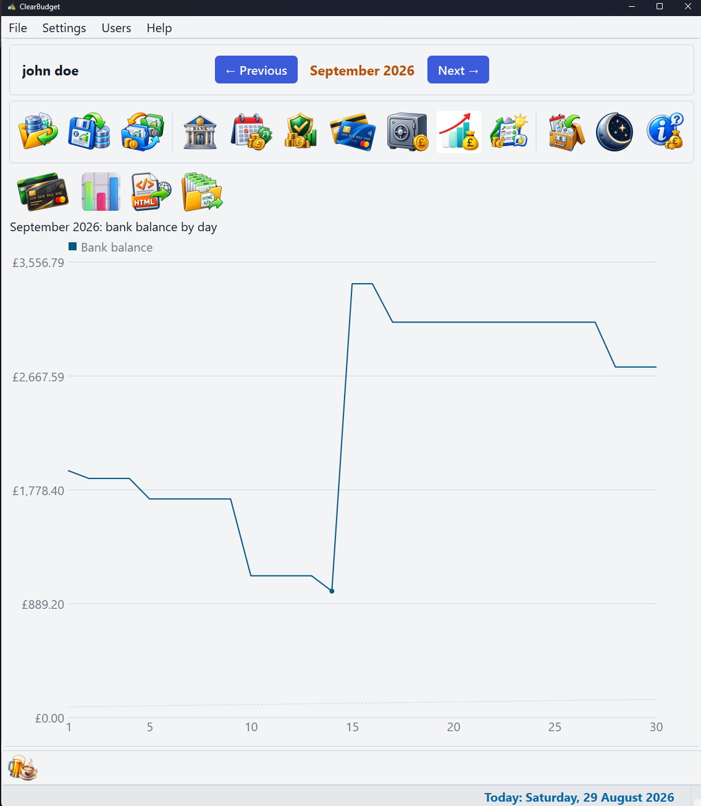
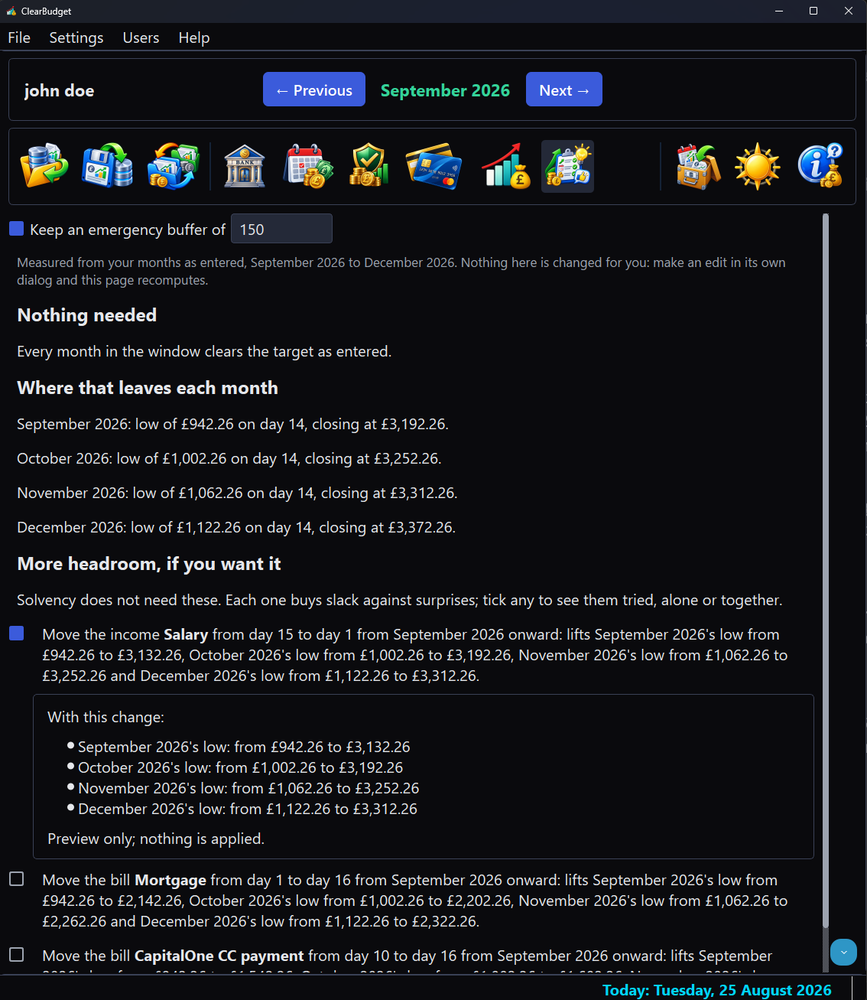

What it looks like
The dark theme is shown here; one button switches the whole application to light, sign-in screen included.
Every screenshot shows the same sample budget, signed in as the demonstration account "john doe". The bills, balances and card figures are invented examples chosen to exercise the app's warnings; none of it is a real person's finances.
The month you are in
Bills and income as two plain tables. Each bill carries its amount, category, what pays it and the day it falls, with Active, Skip and Paid as columns rather than buried in a dialog. Nothing here is a ledger of what already happened; it is the month as it currently stands.

Whether it holds
The bank page answers one question from money you have actually entered. It states the account position, then walks the next two months day by day, each naming its low point, the day that low falls on and what the month needs to hold flat. A month that cannot hold is not merely flagged; it is priced.

What you can actually spend
One number, with the promise behind it spelled out: how far it holds and the day that limits it. A month that cannot be rescued by spending nothing does not silence the figure, because that would be answering a different question; it gets its own line, in red, saying so plainly.

Cards, priced forward
One panel per card carries its limit, what is used, the headroom left and the interest it is accruing. Beneath it, the projection runs each card forward and colours every month by the headroom it leaves rather than by the balance alone.

The month as a picture
Every day of the month as its own bar, with a curve following the real values rather than smoothing across them. The bars carry the verdict a single line cannot: the calm resting colour on a day the account is at or above zero, amber inside an overdraft you arranged and red only where a payment would actually bounce.

Every card on one chart
The same page, switched to the cards. One line per card, so a balance that is quietly climbing stands out against the ones being paid down; the switch's own face shows what a press will plot next.

What would fix it
The Recommendations view says what would make the months ahead survivable, every figure a re-run of the same day-by-day projection the bank page uses. A difficult budget gets its bills retimed and its shortfall priced month by month; a healthy one, like the sample here, is told so plainly and offered the few retimings that buy slack it does not strictly need.
